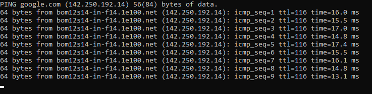
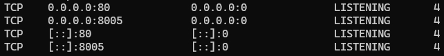
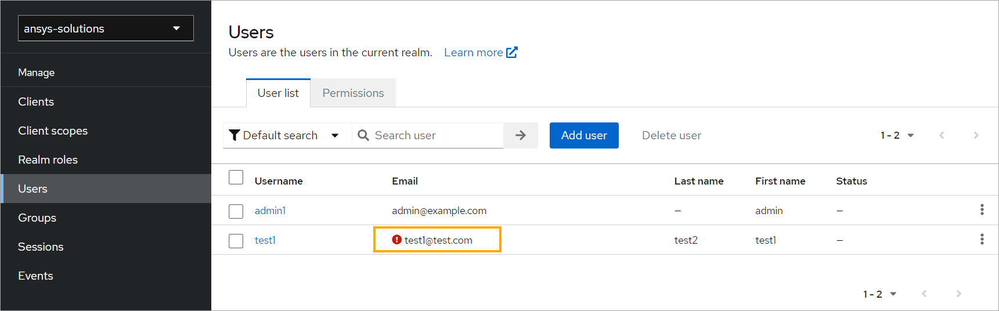
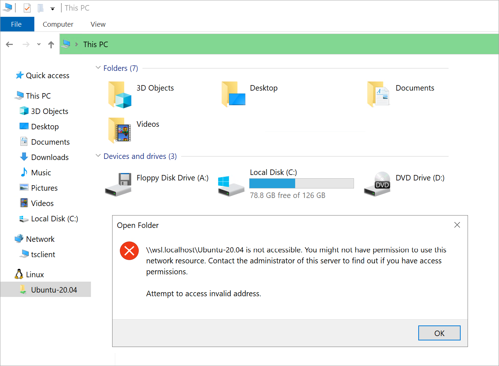
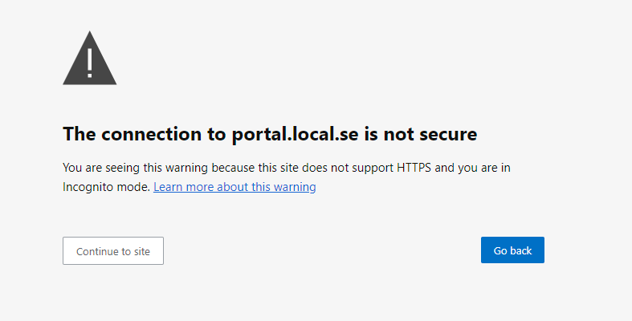
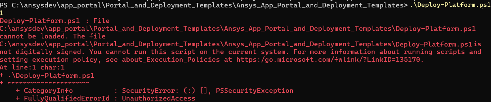
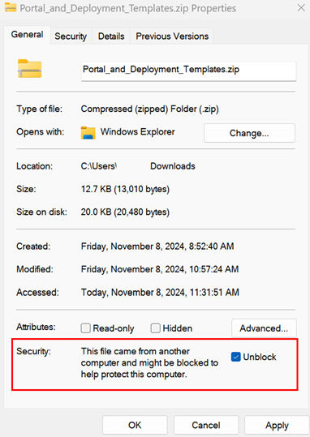
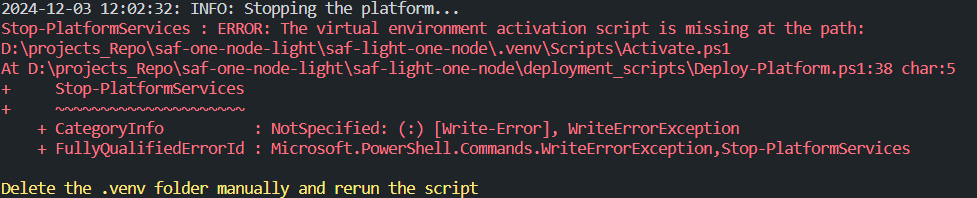
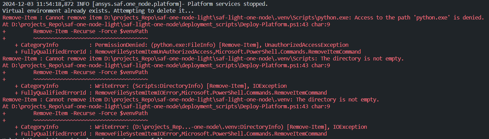

Troubleshoot issues#
This page provides guidance on how to resolve common issues you may encounter when using the platform.
Platform services or portal is not accessible#
To resolve this issue follow below steps:
Check network connectivity in WSL by running the following command in the WSL terminal:
ping google.comYou should see a response similar to the following if network connectivity is available:
If the network is not available, run the following commands on the host machine and then restart the host:
wsl --shutdown netsh winsock reset netsh int ip reset all netsh winhttp reset proxy ipconfig /flushdns
Check Port 80 availability
Port 80 must be free because the platform uses it to establish HTTP communication and serve web content.
Check for existing services occupying Port 80 by running the following command in the Windows PowerShell terminal:
netstat -ano | findstr :80
This command displays information about the processes currently using port 80. The last column of the output is the Process ID (PID) of the process using that port.
Open the Windows Task Manager, go to the Details tab, and find the process with the corresponding PID.
This gives more information about the process, such as its name and resource usage.
Right-click each matching process with the corresponding PID (except the system process with PID = 4) and select End task to stop the process.
Check the hosts file entries
Note
On Windows operating systems, the
hostsfile is located atC:\\Windows\\System32\\drivers\\etc\\hosts.Ensure that the
hostsfile contains the correct mapping of the WSL Native IP address with platform services.- Example of correct mapping:
<wsl_native_ip> keycloak.local.se <wsl_native_ip> traefik.local.se <wsl_native_ip> oauth.local.se <wsl_native_ip> portal.local.se
Tip
To fetch the
<wsl_native_ip>value, run this command in the WSL terminal:ip addr show eth0
Ensure that there are no duplicate entries with different IP addresses in the
hostsfile for the platform services.- Example of incorrect duplicate entries:
<wsl_native_ip> portal.local.se <some_other_ip> portal.local.se
User cannot log in to portal or receives an error when accessing portal UI#
In this case, the user can access the Ansys App Portal, but either cannot log in or receives an error when attempting to access the UI.
To resolve this issue:
Check the user registration details in the Keycloak Admin Console.
Search for the user with the correct name (as specified in the user registration form).
In the user details, verify that the user is registered with the correct email domain name (as specified in the .env file).
Note
The email address for the user must have the email domain specified by the
OP_EMAIL_DOMAINenvironment variable in the.envfile.- Example of invalid email domain:
In this example, the user test1 is registered with a domain of @test.com. This is invalid because the platform was launched with a domain of @example.com.

For more information, visit Manage users.
Error occurs while starting platform services#
To resolve this issue:
Check WSL Network connectivity by running this command:
ping -c 4 google.com
If WSL network connectivity is not available, run these commands on the host machine and then restart the host:
netsh winsock reset netsh int ip reset all netsh winhttp reset proxy ipconfig /flushdns
Projects of an app deployed on the portal are not accessible#
To resolve this issue:
Check for the app service entry in the
hostsfile of the host machine.Tip
On Windows operating systems, the
hostsfile is located atC:\\Windows\\System32\\drivers\\etc\\hosts.Ensure that the
hostsfile contains the correct mapping of the WSL Native IP address with the app service.- Example of correct mapping:
- hosts#
<wsl_native_ip> <application_service_name>.local.se
Tip
To fetch the
<wsl_native_ip>value, run this command in the WSL terminal:ip addr show eth0
Ensure that there are no duplicate entries with different IP addresses in the
hostsfile for the app service.- Example of incorrect duplicate entries:
- hosts#
<wsl_native_ip> <application_service_name>.local.se <some_other_ip> <application_service_name>.local.se
Cannot start optiSLang#
When starting optiSlang, the following error message is shown:
Cannot start optiSLang 242. Please contact your IT admin to make sure that optiSLang is reachable and try again.
The error is likely caused by the host machine being unable to reach the WSL Ubuntu distribution files system.
One way to verify this is to open the WSL file system from Windows Explorer. If you get an error like the shown in the following image, it confirms that the host machine is not able to reach the WSL file system.
{kind=link}
To resolve this issue:
Restart WSL by running this script:
wsl --shutdown wsl
Restart the platform as described in Start up the platform.
Connection to the site is not secure#
When accessing the platform services, you may encounter a warning message that the connection to the site is not secure.
To resolve this issue:
Select an option to continue to site.
{kind=link}
Cannot connect to the Product instance Manager. Please contact your IT admin to make sure that this component is reachable#
When executing the optiSLang workflow, the following error message is shown:
Cannot connect to the Product instance Manager. Please contact your IT admin to make sure that this component is reachable.
{kind=link}
To resolve this issue follow below steps:
Go to the root directory of the platform and run the following command:
Go to the Scripts directory and activate the virtual environment by running the following command:
cd .\.venv\Scripts\
activate
Stop only the pim by running the following command:
python single_node.py -s pim -a stop
Again start only the pim by running the following command:
python single_node.py -s pim
Cannot execute Deploy-Platform.ps1 script#
When executing the Deploy-Platform.ps1 script, you get the following error messages:
Script is Not Digitally Signed#
To resolve this issue, follow the next steps:
Locate
Ansys_App_Portal_and_Deployment_Templates.zipRight click in the zip file and select Properties.
Unblock the file and click in Apply and then Ok.
Unzip the file into a new directory that is not the root directory.
Continue the steps as defined in Deploy and start the platform.
Corrupt Virtual Environment#
Access Denied to Virtual Environment Activation Script#
Access Denied to Virtual Environment Files#
To resolve above issues, follow these steps:
Close all running terminals where the platform script was launched.
Navigate to the root directory of the platform and manually delete the
.venvdirectory.Continue the steps as defined in Deploy and start the platform.